10 ans
J'ai appris en management touristique qu'un leadership centré sur l'humain transforme l'engagement des équipes en expériences clients mémorables et authentiques.


J’accompagne les dirigeant(e)s d’hébergements touristiques à développer une posture managériale révélatrice de talents,
pour créer, avec leurs équipes, des expériences clients vivantes et mémorables.
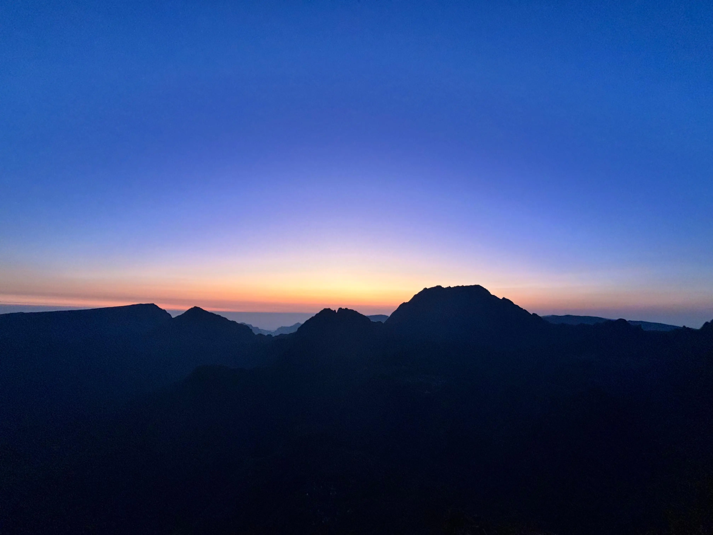
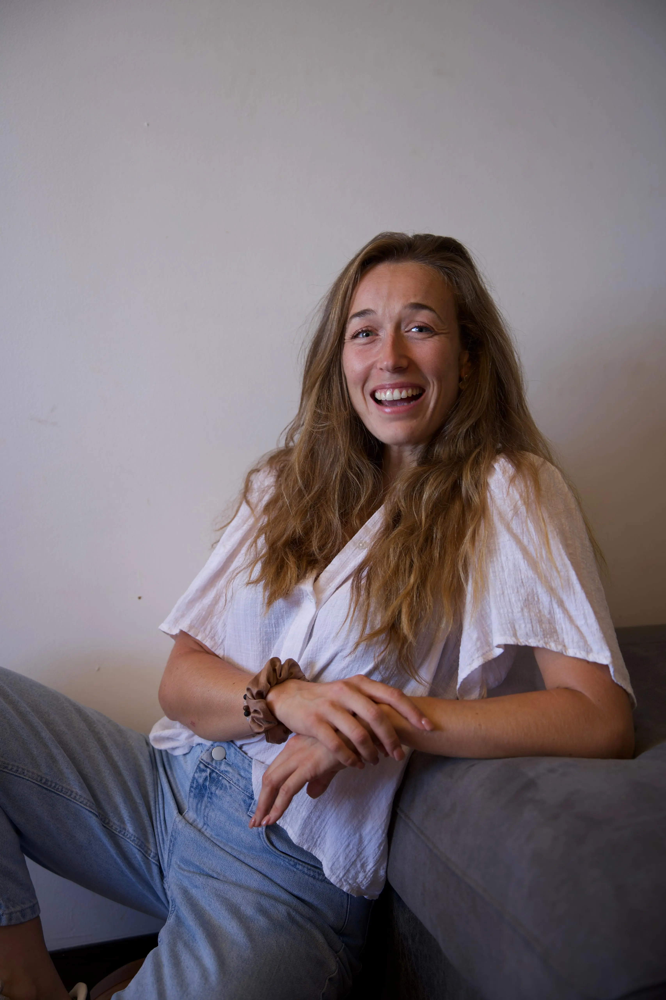
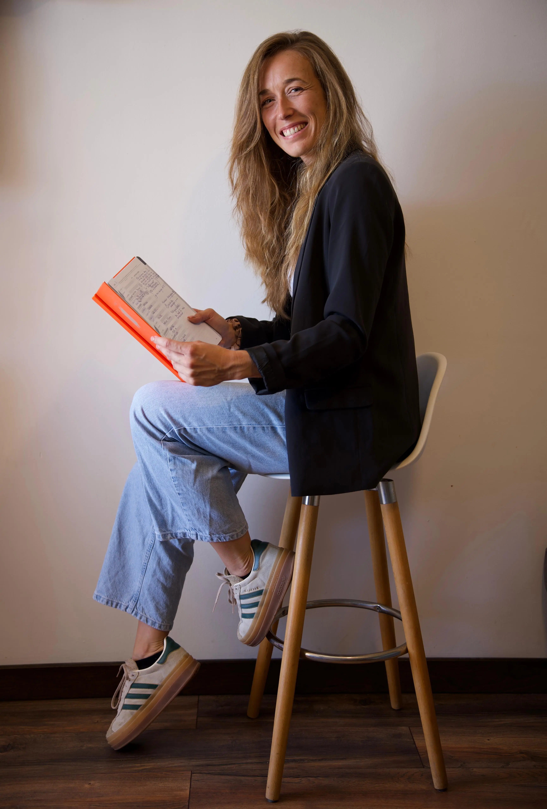
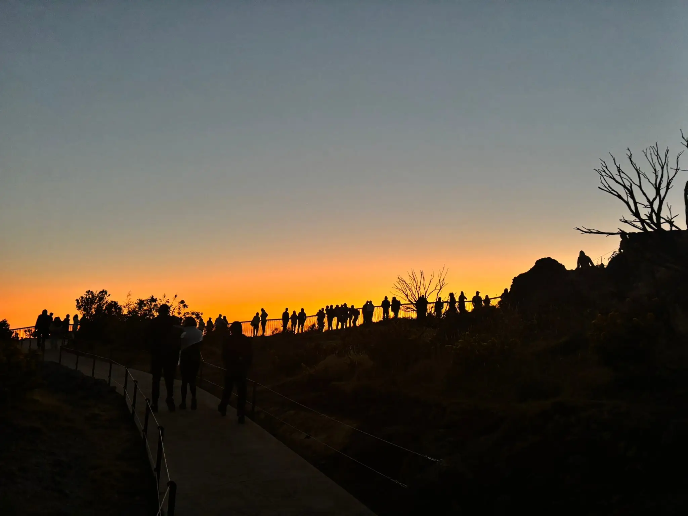
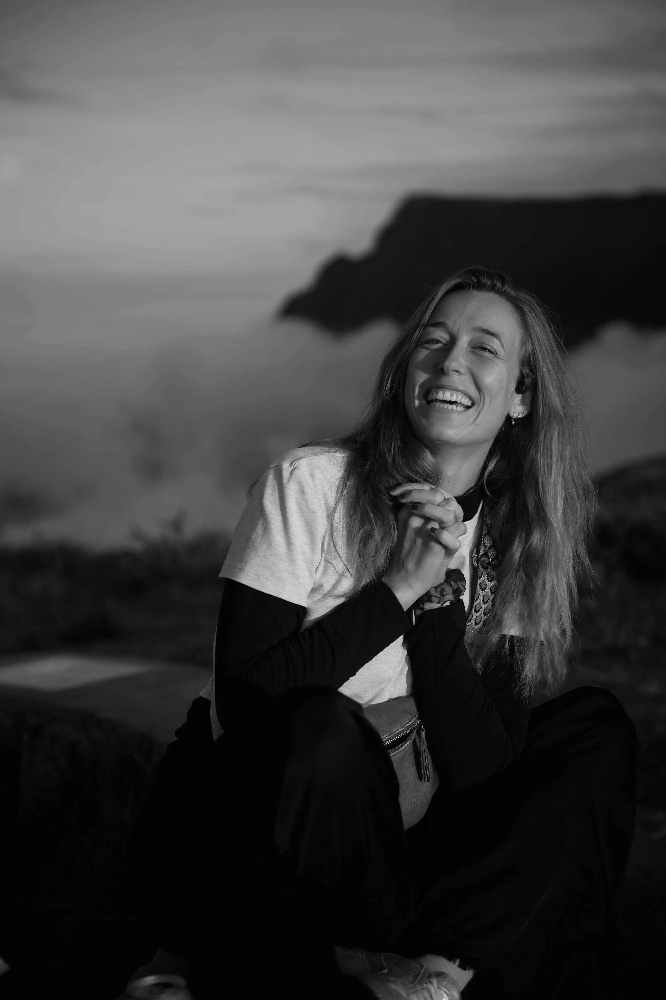
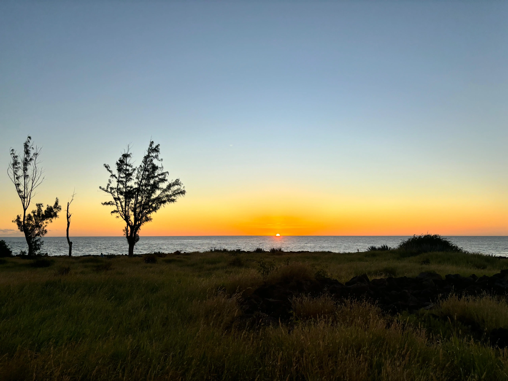
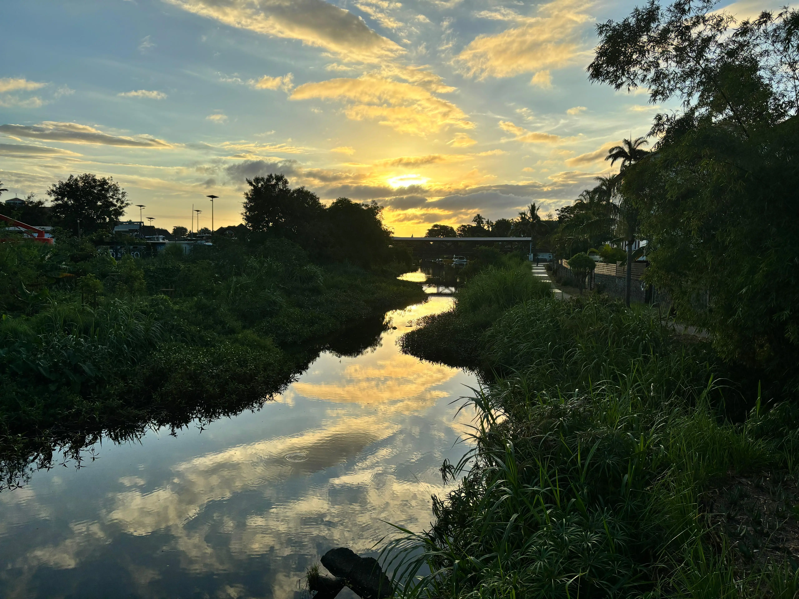
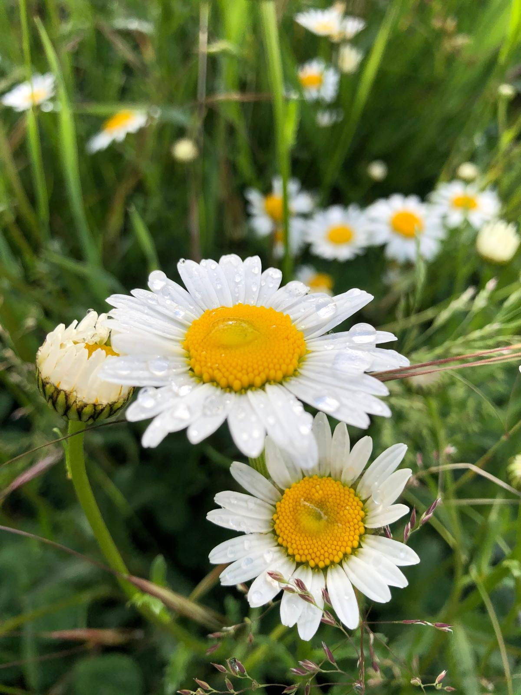
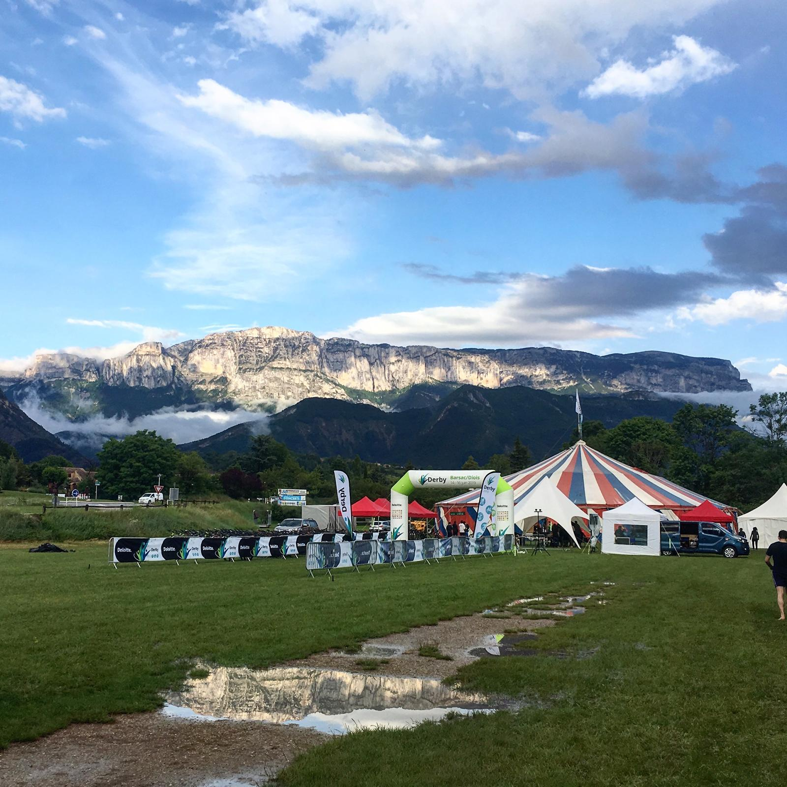
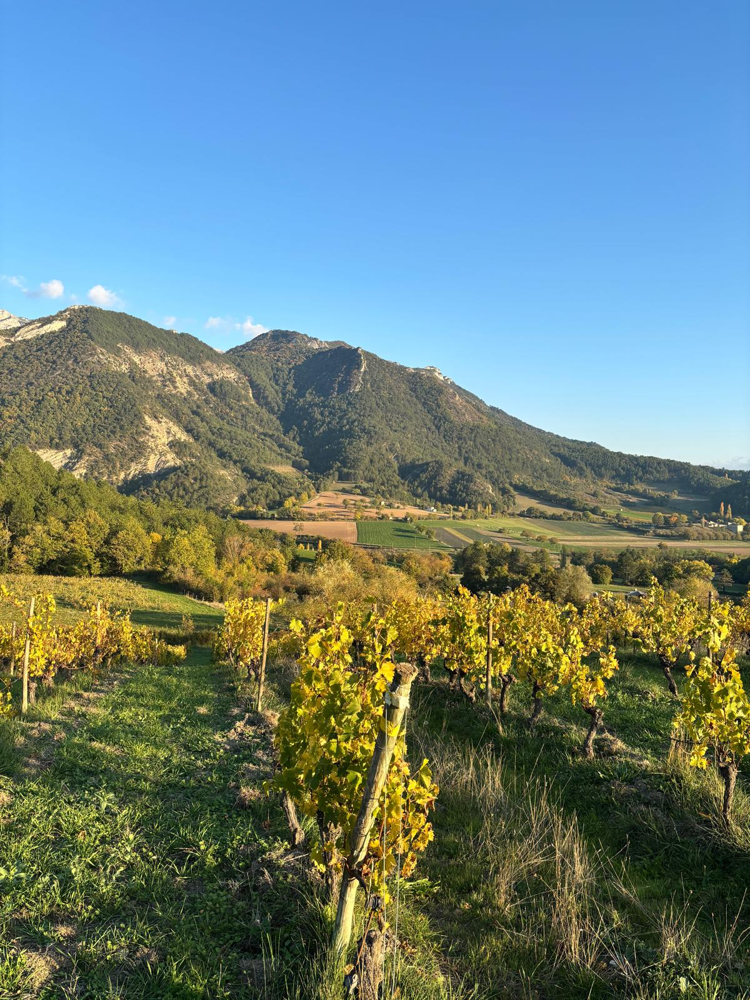
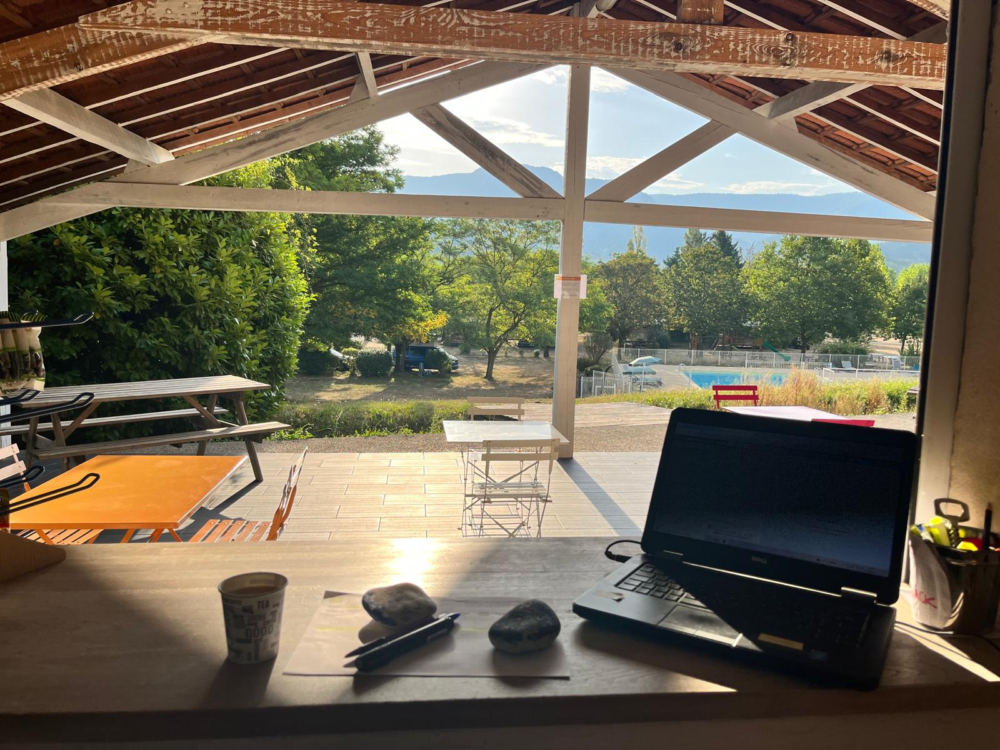
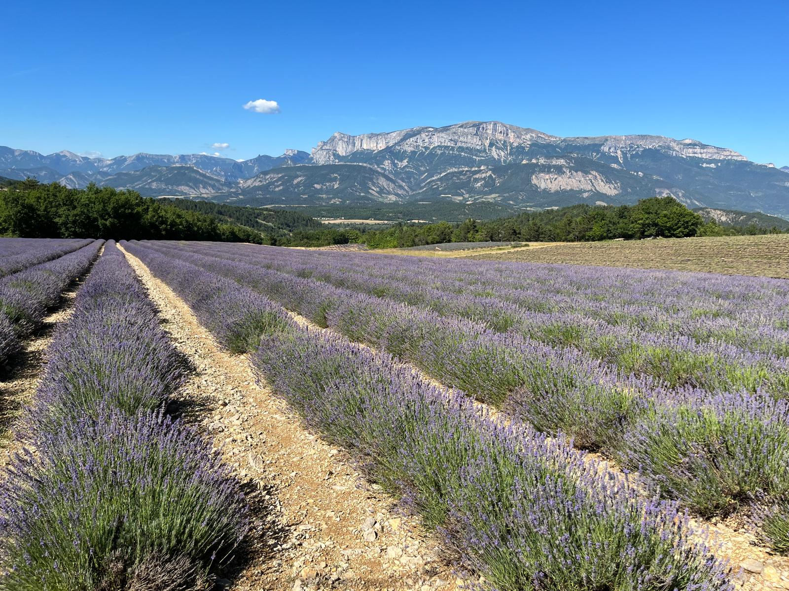
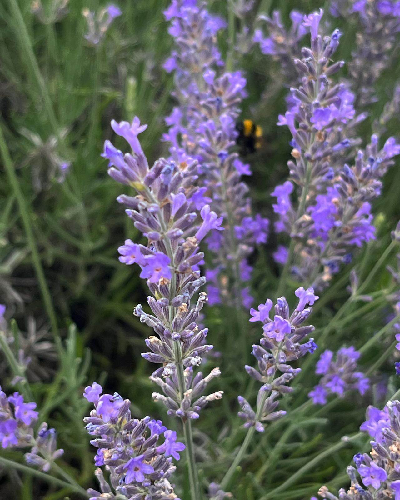
Après dix années consacrées au tourisme et à la gestion d'hébergement dans la Drôme, j'ai choisi une nouvelle trajectoire professionnelle, fondée sur l'alliance entre efficacité et relation humaine.
Je m'appelle Marie, je suis coach professionnelle, et j'accompagne les dirigeants de lieux d'accueil, hôtels, campings, maisons d'hôtes, résidences et établissements indépendants, à développer une posture managériale révélatrice de talents...
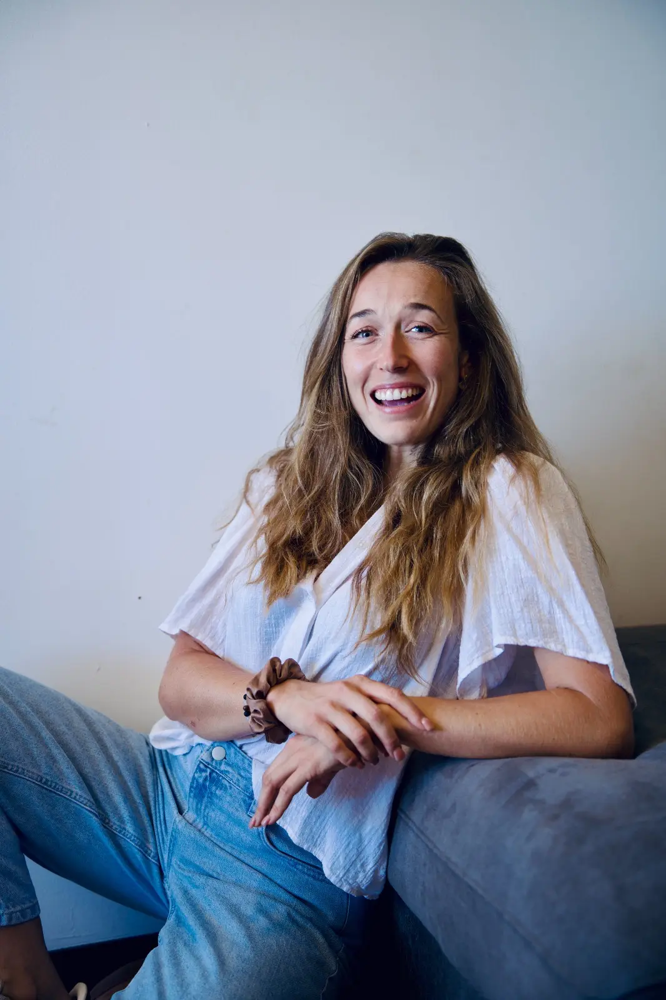
10 ans
J'ai appris en management touristique qu'un leadership centré sur l'humain transforme l'engagement des équipes en expériences clients mémorables et authentiques.
2 formations
En coaching et en sophrologie, elles me permettent de vous accompagner sur votre posture managériale et votre capacité à rester aligné(e) et serein(e) dans les moments de tension.
1 passion
Faire émerger ce qui rend chaque lieu unique, en révélant les talents de celles et ceux qui le font vivre au quotidien.
Mes accompagnements / Méthode
Un accompagnement en 3 niveaux, vendables séparément selon vos besoins, ou en parcours complet pour un impact maximal.
Leadership et posture managériale
Je vous aide à développer un leadership authentique et inspirant, capable d’incarner votre vision et de donner du sens à l’action quotidienne. Nous clarifions la culture de votre établissement, vision, valeurs, rituels, codes, et alignons votre leadership avec vos équipes. Puis nous mettons en place des stratégies concrètes pour gérer le stress, l’énergie et le temps, afin de faire de votre leadership un moteur d’engagement.
Prendre rendez-vousRecrutement et révélation des talents
Le succès d’un établissement repose sur les bonnes personnes aux bons endroits. Je vous accompagne pour recruter des collaborateurs en harmonie avec l’ADN de votre établissement, identifier leurs talents et les placer dans des rôles où ils s’épanouissent. L’objectif est de constituer une équipe capable de faire vivre une expérience client authentique et mémorable.
Prendre rendez-vousCohésion d’équipe et engagement
Nous travaillons sur la compréhension des motivations et forces de chaque collaborateur et sur la manière dont elles s’articulent avec votre leadership. À travers des ateliers concrets et participatifs, nous renforçons l’engagement, la vision commune et la cohésion, pour que chacun contribue au succès collectif.
L’objectif est de transformer votre management en levier stratégique, pour révéler le potentiel de vos équipes et créer des expériences clients haut de gamme et vivantes.
Prendre rendez-vousDes résultats mesurables et durables
En 4 mois, vous transformez votre posture managériale, stabilisez votre équipe et améliorez durablement l’expérience client.
01
Un leadership plus juste, clair et serein. Moins de fatigue, plus de confiance et de fluidité dans vos décisions.
Résultat clé : un dirigeant disponible, solide et capable de faire briller son équipe et son établissement.
02
Des équipes plus engagées, autonomes et impliquées. Une meilleure cohésion, une communication fluide et moins de tensions.
Résultat clé : une équipe stable, engagée et fiable, prête à faire briller votre établissement.
03
Une culture d’entreprise claire et incarnée. Des processus plus fluides, une structure stable, et un recrutement aligné et durable.
Résultat clé : une organisation solide et pérenne, capable de soutenir la performance sur le long terme.
04
Une expérience authentique et humaine, un accueil renforcé, des moments vivants et mémorables, plus de satisfaction et de fidélisation.
Résultat clé : une expérience client profondément vivante, différenciante et mémorable, qui renforce votre réputation.
« Plutôt que d’ouvrir les autres à la raison, il importe de s’ouvrir à la raison des autres, car l’autre a ses raisons que ma raison ignore. »
Claude Lévi-Strauss
Avis
“Marie nous a aidés à clarifier notre vision et à remettre du sens dans nos décisions. L’équipe est beaucoup plus alignée.”
“Nous avons retrouvé une vraie dynamique collective. Les managers communiquent mieux et les tensions ont nettement diminué.”
“L’accompagnement est concret et humain. On a gagné en cohésion, en engagement et en efficacité au quotidien.”
“Les rituels mis en place ont transformé notre façon de travailler. Les décisions sont plus fluides et plus cohérentes.”
“Marie est une professionnelle à l’écoute, réfléchie et attentive. Ses coachings ont été un vrai plus pour mon évolution personnelle et professionnelle. Je la recommande à 100%, merci Marie.”

“J’ai travaillé avec Marie Troccaz et j’ai apprécié son management bienveillant, positif et constructif. Elle a renforcé la cohésion de notre équipe.” “En tant que professionnelle salariée ayant travaillé avec Marie Troccaz, j’ai trouvé son management bienveillant, positif et constructif. Elle a permis une cohésion forte de notre équipe et un travail en commun. Grâce à cette collaboration, j’ai pu m’épanouir au travail car j’ai pu faire des propositions, créer de petits projets et exprimer ma personnalité. Je me suis sentie soutenue et portée par notre but commun : être entièrement au service des clients.”
 ONLYCAMP
ONLYCAMP
 MSD MEDIA
MSD MEDIA
 VANESSA CONSEIL ET COACHING
VANESSA CONSEIL ET COACHING
 FOURNIL DE SYLVAIN
FOURNIL DE SYLVAIN
 OFFICE DU TOURISME DIE
OFFICE DU TOURISME DIE
 DEPARTEMENT DROME
DEPARTEMENT DROME
 INC3M
INC3M
 VALLEE DE LA DROME
VALLEE DE LA DROME
 HOTEL LE CARNOT
HOTEL LE CARNOT
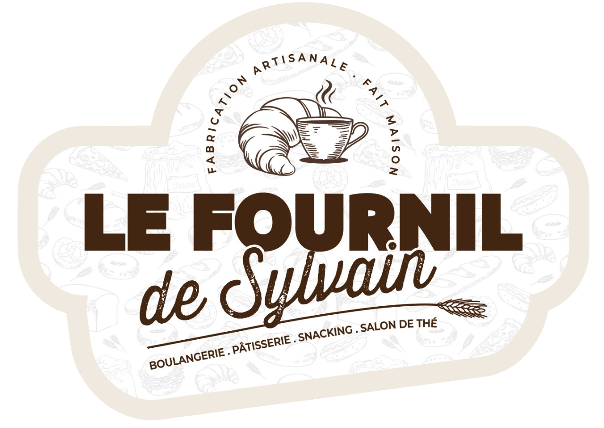
FOURNIL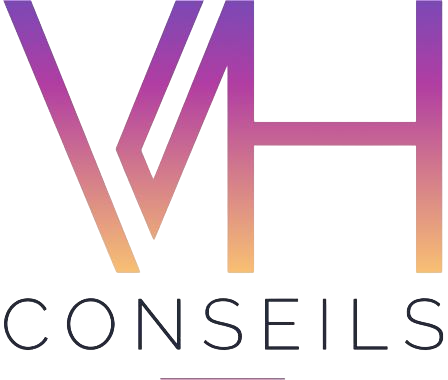
VHVous avez des questions ? J’y réponds.
J’adopte une approche orientée résultats qui combine clarté stratégique et intelligence relationnelle. Nous commençons par évaluer vos besoins, fixons des objectifs SMART puis nous posons des actions concrètes.
Prêt à avancer
Un premier échange pour clarifier vos enjeux et définir la meilleure trajectoire d’accompagnement.